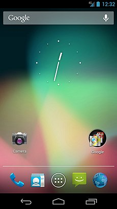
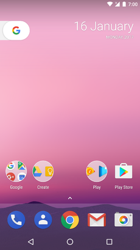

Android version history
{kind=link}
The version history of the Android mobile operating system began with the public release of the Android beta on November 5, 2007. The first commercial version, Android 1.0, was released on September 23, 2008. Android is continually developed by Google and the Open Handset Alliance, and it has seen a number of updates to its base operating system since the initial release.
Contents
- 1 Code names
- 2 Pre-commercial release versions
- 3 Version history by API level
- 3.1 Android 1.0 (API 1)
- 3.2 Android 1.1 (API 2)
- 3.3 Android 1.5 Cupcake (API 3)
- 3.4 Android 1.6 Donut (API 4)
- 3.5 Android 2.0 Eclair (API 5)
- 3.6 Android 2.2 Froyo (API 8)
- 3.7 Android 2.3 Gingerbread (API 9)
- 3.8 Android 3.0 Honeycomb (API 11)
- 3.9 Android 4.0 Ice Cream Sandwich (API 14)
- 3.10 Android 4.1 Jelly Bean (API 16)
- 3.11 Android 4.4 KitKat (API 19)
- 3.12 Android 5.0 Lollipop (API 21)
- 3.13 Android 6.0 Marshmallow (API 23)
- 3.14 Android 7.0 Nougat (API 24)
- 3.15 Android 8.0 Oreo (API 26)
- 3.16 Android 9 Pie (API 28)
- 3.17 Android 10 Q (API 29)
- 4 Hardware requirements
- 5 See also
- 6 Notes
- 7 References
- 8 External links
Code names[edit]
Versions 1.0 and 1.1 were not released under specific code names, although Android 1.1 was unofficially known as Petit Four.
Android code names are confectionery-themed and have been in alphabetical order since 2009's Android 1.5 Cupcake. The most recent version of Android is Android 9 Pie, which was released in August 2018.
| Code name |
Version number |
Linux kernel version[1] |
Initial release date |
API level |
Ref |
|---|---|---|---|---|---|
| (No codename) | 1.0 | ? | September 23, 2008 | 1 | [2] |
| Petit Four | 1.1 | 2.6 | February 9, 2009 | 2 | [2] |
| Cupcake | 1.5 | 2.6.27 | April 27, 2009 | 3 | |
| Donut | 1.6 | 2.6.29 | September 15, 2009 | 4 | [3] |
| Eclair | 2.0 2.1 | 2.6.29 | October 26, 2009 | 5 7 | [4] |
| Froyo | 2.2 2.2.3 | 2.6.32 | May 20, 2010 | 8 | [5] |
| Gingerbread | 2.3 2.3.7 | 2.6.35 | December 6, 2010 | 9 10 | [6] |
| Honeycomb | 3.0 3.2.6 | 2.6.36 | February 22, 2011 | 11 13 | [7] |
| Ice Cream Sandwich | 4.0 4.0.4 | 3.0.1 | October 18, 2011 | 14 15 | [8] |
| Jelly Bean | 4.1 4.3.1 | 3.0.31 to 3.4.39 | July 9, 2012 | 16 18 | [9] |
| KitKat | 4.4 4.4.4 | 3.10 | October 31, 2013 | 19 20 | [10] |
| Lollipop | 5.0 5.1.1 | 3.16 | November 12, 2014 | 21 22 | [11] |
| Marshmallow | 6.0 6.0.1 | 3.18 | October 5, 2015 | 23 | [12] |
| Nougat | 7.0 7.1.2 | 4.4 | August 22, 2016 | 24 25 | [13] |
| Oreo | 8.0 8.1 | 4.10 | August 21, 2017 | 26 27 | [14] |
| Pie | 9.0 | 4.4.107, 4.9.84, and 4.14.42 | August 6, 2018 | 28 | [15] |
| Android Q | 10.0 | 29 | |||
Legend: Old version Older version, still supported Latest version Latest preview version | |||||
Pre-commercial release versions[edit]
The development of Android started in 2003 by Android, Inc., which was purchased by Google in 2005.[16]
Alpha[edit]
There were at least two internal releases of the software inside Google and the OHA before the beta version was released.[17][18]
To avoid confusion, the code names "Astro Boy" and "Bender" were only known to be tagged internally on some early pre-1.0 milestone builds, and thus were never used as the actual code names of the 1.0 and 1.1 release of the OS, as many people are mistakenly calling and repeating on the web.[2] Dan Morrill created some of the first mascot logos, but the current Android logo was designed by Irina Blok.[19] The project manager, Ryan Gibson, conceived the confectionery-themed naming scheme that has been used for the majority of the public releases, starting with Android 1.5 Cupcake.
Beta[edit]
The beta was released on November 5, 2007,[20][21] while the software development kit (SDK) was released on November 12, 2007.[22] The November 5 date is popularly celebrated as Android's "birthday".[23] Public beta versions of the SDK were released in the following order:[24]
- November 12, 2007: m3-rc20a (milestone 3, release code 20a)[25]
- November 16, 2007: m3-rc22a (milestone 3, release code 22a)[26]
- December 14, 2007: m3-rc37a (milestone 3, release code 37a)[27]
- February 13, 2008: m5-rc14 (milestone 5, release code 14)[28]
- March 3, 2008: m5-rc15 (milestone 5, release code 15)[24]
- August 18, 2008: 0.9 Beta[29][30]
- September 23, 2008: 1.0-r1[31]
Version history by API level[edit]
The following tables show the release dates and key features of all Android operating system updates to date, listed chronologically by their official application programming interface (API) levels.
| hide Android 1.0 (API 1)
| ||
|---|---|---|
| Android 1.0, the first commercial version of the software, was released on September 23, 2008.[32] The first commercially available Android device was the HTC Dream.[33] Android 1.0 incorporated the following features: | ||
| Version | Release date | Features |
| 1.0 | September 23, 2008 |
|
| hide Android 1.1 (API 2)
| ||
|---|---|---|
| On February 9, 2009, the Android 1.1 update was released, initially for the HTC Dream only. Android 1.1 was known as "Petit Four" internally, though this name was not used officially.[2][40] The update resolved bugs, changed the Android API and added a number of features:[41] | ||
| Version | Release date | Features |
| 1.1 | February 9, 2009 |
|
| hide Android 1.5 Cupcake (API 3)
| |||
|---|---|---|---|
| On April 27, 2009, the Android 1.5 update was released, based on Linux kernel 2.6.27.[42][43] This was the first release to officially use a codename based on a dessert item ("Cupcake"), a theme which would be used for all releases henceforth. The update included several new features and UI amendments:[44] | |||
| Version | Release date | Features | Image(s) |
| 1.5 | April 27, 2009[42] |
| Android 1.5 home screen |
{kind=link}
| hide Android 1.6 Donut (API 4)
| |||
|---|---|---|---|
| On September 15, 2009, Android 1.6 dubbed Donut was released, based on Linux kernel 2.6.29.[46][47][48] Included in the update were numerous new features:[46] | |||
| Version | Release date | Features | Image(s) |
| 1.6 | September 15, 2009[47] |
|  Android 1.6 home screen |
| hide Android 2.0 Eclair (API 5)
| |||
|---|---|---|---|
| On October 26, 2009, the Android 2.0 SDK was released, based on Linux kernel 2.6.29 and codenamed Eclair.[49] Changes include the ones listed below.[50] | |||
| Version | Release date | Features | Image(s) |
| 2.0 | October 26, 2009 |
| Android 2.0 home screen |
{kind=link}
| hide Android 2.0.1 Eclair (API 6)
| |||
|---|---|---|---|
| Version | Release date | Features | Image(s) |
| 2.0.1 | December 3, 2009[52] |
| |
| hide Android 2.1 Eclair (API 7)
| |||
|---|---|---|---|
| Version | Release date | Features | Image(s) |
| 2.1 | January 12, 2010[53] |
| Android 2.1 home screen |
{kind=link}
| hide Android 2.2 Froyo (API 8)
| |||
|---|---|---|---|
| On May 20, 2010, the SDK for Android 2.2 (Froyo, short for frozen yogurt) was released, based on Linux kernel 2.6.32.[54] | |||
| Version | Release date | Features | Image(s) |
| 2.2 | May 20, 2010 |
| Android 2.2 home screen |
| 2.2.1 | January 18, 2011 |
| |
| 2.2.2 | January 22, 2011 |
| |
| 2.2.3 | November 21, 2011[62] |
| |
{kind=link}
| hide Android 2.3 Gingerbread (API 9)
| |||
|---|---|---|---|
| On December 6, 2010, the Android 2.3 (Gingerbread) SDK was released, based on Linux kernel 2.6.35.[63][64] Changes included:[63] | |||
| Version | Release date | Features | Image(s) |
| 2.3 | December 6, 2010[64] |
| Android 2.3 home screen |
| 2.3.1 | December 2010 |
| |
| 2.3.2 | January 2011 |
| |
{kind=link}
| hide Android 2.3.3 Gingerbread (API 10)
| |||
|---|---|---|---|
| Version | Release date | Features | Image(s) |
| 2.3.3 | February 9, 2011 |
| |
| 2.3.4 | April 28, 2011[68] |
| |
| 2.3.5 | July 25, 2011 |
| |
| 2.3.6 | September 2, 2011[74] |
| |
| 2.3.7 | September 21, 2011 |
| |
| hide Android 3.0 Honeycomb (API 11)
| |||
|---|---|---|---|
| On February 22, 2011, the Android 3.0 (Honeycomb) SDK the first tablet-only Android update was released, based on Linux kernel 2.6.36.[77][78][79][80] The first device featuring this version, the Motorola Xoom tablet, was released on February 24, 2011.[81] The update's features included:[77] | |||
| Version | Release date | Features | Image(s) |
| 3.0 | February 22, 2011[79] |
| Android 3.0 home screen |
{kind=link}
| hide Android 3.1 Honeycomb (API 12)
| |||
|---|---|---|---|
| Version | Release date | Features | Image(s) |
| 3.1 | May 10, 2011[85] |
| |
| hide Android 3.2 Honeycomb (API 13)
| |||
|---|---|---|---|
| Version | Release date | Features | Image(s) |
| 3.2 | July 15, 2011[88] |
| |
| 3.2.1 | September 20, 2011 |
| |
| 3.2.2 | August 30, 2011 |
| |
| 3.2.3 | August 30, 2011[89][88][88] |
| |
| 3.2.4 | December 2011 |
| |
| 3.2.5 | January 2012 |
| |
| 3.2.6 | February 2012 |
| |
| hide Android 4.0 Ice Cream Sandwich (API 14)
| |||
|---|---|---|---|
| The SDK for Android 4.0.1 (Ice Cream Sandwich), based on Linux kernel 3.0.1,[90] was publicly released on October 19, 2011.[91] Google's Gabe Cohen stated that Android 4.0 was "theoretically compatible" with any Android 2.3.x device in production at that time.[92] The source code for Android 4.0 became available on November 14, 2011.[93] Ice Cream Sandwich was the last version to officially support Adobe Systems' Flash player.[94] The update introduced numerous new features:[95][96][97] | |||
| Version | Release date | Features | Image(s) |
| 4.0 | October 18, 2011[95] |
| Android 4.0 home screen |
| 4.0.1 | October 21, 2011 |
| |
| 4.0.2 | November 28, 2011 |
| |
{kind=link}
| hide Android 4.0.3 Ice Cream Sandwich (API 15)
| |||
|---|---|---|---|
| Version | Release date | Features | Image(s) |
| 4.0.3 | December 16, 2011[103] |
| |
| 4.0.4 | March 29, 2012[105] |
| |
| hide Android 4.1 Jelly Bean (API 16)
| |||
|---|---|---|---|
| Google announced Android 4.1 (Jelly Bean) at the Google I/O conference on June 27, 2012. Based on Linux kernel 3.0.31, Jelly Bean was an incremental update with the primary aim of improving the functionality and performance of the user interface. The performance improvement involved "Project Butter", which uses touch anticipation, triple buffering, extended vsync timing and a fixed frame rate of 60 fps to create a fluid and "buttery-smooth" UI.[107] Android 4.1 Jelly Bean was released to the Android Open Source Project on July 9, 2012,[108] and the Nexus 7 tablet, the first device to run Jelly Bean, was released on July 13, 2012. | |||
| Version | Release date | Features | Image(s) |
| 4.1 | July 9, 2012 |
|  Android 4.1 home screen |
| 4.1.1 | July 11, 2012[112] |
| |
| 4.1.2 | October 9, 2012[113] | ||
{kind=link}
| hide Android 4.2 Jelly Bean (API 17)
| ||
|---|---|---|
| Google was expected to announce Jelly Bean 4.2 at an event in New York City on October 29, 2012, but the event was cancelled due to Hurricane Sandy.[116] Instead of rescheduling the live event, Google announced the new version with a press release, under the slogan "A new flavor of Jelly Bean". Jelly Bean 4.2 was based on Linux kernel 3.4.0, and debuted on Google's Nexus 4 and Nexus 10, which were released on November 13, 2012.[117][118] | ||
| Version | Release date | Features |
| 4.2 | November 13, 2012[119] |
|
| 4.2.1 | November 27, 2012[124] |
|
| 4.2.2 | February 11, 2013[126] |
|
| hide Android 4.3 Jelly Bean (API 18)
| ||
|---|---|---|
| Google released Jelly Bean 4.3 under the slogan "An even sweeter Jelly Bean" on July 24, 2013, during an event in San Francisco called "Breakfast with Sundar Pichai". Most Nexus devices received the update within a week, although the second-generation Nexus 7 tablet was the first device to officially ship with it.[128] A minor bugfix update was released on August 22, 2013.[129] | ||
| Version | Release date | Features |
| 4.3 | July 24, 2013[130] |
|
| 4.3.1 | October 3, 2013[139] |
|
| hide Android 4.4 KitKat (API 19)
| |||
|---|---|---|---|
| Google announced Android 4.4 KitKat on September 3, 2013. Although initially under the "Key Lime Pie" ("KLP") codename, the name was changed because "very few people actually know the taste of a key lime pie."[141] Some technology bloggers also expected the "Key Lime Pie" release to be Android 5.[142] KitKat debuted on Google's Nexus 5 on October 31, 2013, and was optimized to run on a greater range of devices than earlier Android versions, having 512 MB of RAM as a recommended minimum; those improvements were known as "Project Svelte" internally at Google.[143] The required minimum amount of RAM available to Android is 340 MB, and all devices with less than 512 MB of RAM must report themselves as "low RAM" devices.[144] | |||
| Version | Release date | Features | Image(s) |
| 4.4 | October 31, 2013[145][146] |
| Android 4.4 home screen |
| 4.4.1 | December 5, 2013[158] |
| |
| 4.4.2 | December 9, 2013[159] |
| |
| 4.4.3 | June 2, 2014[161] |
| |
| 4.4.4 | June 19, 2014[164] |
| |
_Screenshot.jpg){kind=link}
| hide | ||
|---|---|---|
| On June 24, 2014, a version of Android KitKat exclusive to Android Wear devices was released. | ||
| Version | Release date | Features |
| 4.4W[166] | June 25, 2014[167] |
|
| 4.4W.1 | September 6, 2014[168] |
|
| 4.4W.2 | October 21, 2014[169] |
|
| hide Android 5.0 Lollipop (API 21)
| |||
|---|---|---|---|
| Android 5.0 "Lollipop" was unveiled under the codename "Android L" on June 25, 2014, during Google I/O. It became available as official over-the-air (OTA) updates on November 12, 2014, for select devices that run distributions of Android serviced by Google, including Nexus and Google Play edition devices. Its source code was made available on November 3, 2014.[170][171]
Lollipop features a redesigned user interface built around a responsive design language referred to as "material design". Other changes include improvements to the notifications, which can be accessed from the lockscreen and displayed within applications as top-of-the-screen banners. Furthermore, Google made internal changes to the platform, with the Android Runtime (ART) officially replacing Dalvik for improved application performance, and with changes intended to improve and optimize battery usage, known internally as Project Volta.[172][173][174][175] | |||
| Version | Release date | Features | Image(s) |
| 5.0[176] | November 12, 2014[177] |
| Android 5.0 home screen |
| 5.0.1 | December 2, 2014[191] |
| |
| 5.0.2 | December 19, 2014[192] |
| |
{kind=link}
| hide Android 5.1 Lollipop (API 22)
| |||
|---|---|---|---|
| Version | Release date | Features | Image(s) |
| 5.1 | March 9, 2015[195] |
| |
| 5.1.1 | April 21, 2015[198] |
| |
| hide Android 6.0 Marshmallow (API 23)
| |||
|---|---|---|---|
| Android 6.0 "Marshmallow" was unveiled under the codename "Android M" during Google I/O on May 28, 2015, for the Nexus 5 and Nexus 6 phones, Nexus 9 tablet, and Nexus Player set-top box, under the build number MPZ44Q.[200] The third developer preview (MPA44G) was released on August 17, 2015 for the Nexus 5, Nexus 6, Nexus 9 and Nexus Player devices,[201] and was updated to MPA44I that brought fixes related to Android for Work profiles.[202] | |||
| Version | Release date | Features | Image(s) |
| 6.0 | October 5, 2015[203] |
| Android 6.0 home screen |
| 6.0.1 | December 7, 2015[219] |
| |
{kind=link}
| hide Android 7.0 Nougat (API 24)
| |||
|---|---|---|---|
| Android "Nougat" (codenamed N in-development) is the major 7.0 release of the Android operating system. It was first released as a developer preview on March 9, 2016, with factory images for current Nexus devices, as well as with the new "Android Beta Program" which allows supported devices to be upgraded directly to the Android Nougat beta via over-the-air update. Final release was on August 22, 2016. The final preview build was released on July 18, 2016,[221] with the build number NPD90G. | |||
| Version | Release date | Features | Image(s) |
| 7.0 | August 22, 2016 |
| Android 7.0 home screen |
{kind=link}
| hide Android 7.1 Nougat (API 25)
| |||
|---|---|---|---|
| On October 19, 2016, Google released Android 7.1.1 as a developer preview for the Nexus 5X, Nexus 6P and the Pixel C. A second preview became available on November 22, 2016, before the final version was released to the public on December 5, 2016. | |||
| Version | Release date | Features | Image(s) |
| 7.1 | October 4, 2016[226] |
|  Android 7.1 home screen |
| 7.1.1[227] | December 5, 2016 |
| |
| 7.1.2[228][229] | April 4, 2017 |
| |
{kind=link}
| hide Android 8.0 Oreo (API 26)
| |||
|---|---|---|---|
| Android Oreo is the 8th major release of the Android operating system. It was first released as a developer preview on March 21, 2017, with factory images for current Nexus and Pixel devices. The final developer preview was released on July 24, 2017, with the stable version released in August 2017. | |||
| Version | Release date | Features | Image(s) |
| 8.0[230] | August 21, 2017 |
| Android 8.0 home screen |
| hide Android 8.1 Oreo (API 27)
| |||
|---|---|---|---|
| Android Oreo is the 8th major release of the Android operating system. It was first released as a developer preview on October 25, 2017, with factory images for current Nexus and Pixel devices. A second developer preview was made available on November 27, 2017 for Nexus and Pixel devices, before the stable version was released on December 5, 2017. | |||
| Version | Release date | Features | Image(s) |
| 8.1[231][232] | December 5, 2017[233][234] |
|  Android 8.1 home screen |
| hide Android 9 Pie (API 28)
| |||
|---|---|---|---|
| Android Pie is the ninth major version of the Android operating system. It was first announced by Google on March 7, 2018, and the first developer preview was released on the same day. Second preview, considered beta quality, was released on May 8, 2018. The final beta of Android P (fifth preview, also considered as a "Release Candidate") was released on July 25, 2018. The first official release was released on August 6, 2018. | |||
| Version | Release date | Features | Image(s) |
| 9
|
August 6, 2018
|
|  Android 9.0 home screen |
| hide Android 10 Q (API 29)
| |||
|---|---|---|---|
| Android Q is the tenth major version of the Android operating system. It was first announced by Google on March 13, 2019, and the first beta was released on the same day. The second beta (the first incremental update) was released on April 3, 2019. The third beta (the second and final incremental update) was released at the Google I/O conference on May 7, 2019. | |||
| Version | Release date | Features | Image(s) |
| 10
|
To be announced
|
|  Android Q Beta 2 home screen |
Hardware requirements[edit]
The main hardware platform for Android is the ARM architecture (ARMv7 and ARMv8-A architectures; formerly also ARMv5), with x86[c] and MIPS[d] architectures also officially supported in later versions of Android, but MIPS support has since been deprecated and support was removed in NDK r17.[245]
Unofficial Android-x86 project used to provide support for the x86 and MIPS architectures ahead of the official support.[246][247] In 2012, Android devices with Intel processors began to appear, including phones[248] and tablets. While gaining support for 64-bit platforms, Android was first made to run on 64-bit x86 and then on ARM64.[249][250] Since Android 5.0 Lollipop, 64-bit variants of all platforms are supported in addition to the 32-bit variants.
Requirements for the minimum amount of RAM for devices running Android 7.1 depend on screen size and density and type of CPU, ranging from 816 MB1.8 GB for 64-bit and 512 MB1.3 GB for 32-bit meaning in practice 1 GB for the most common type of display (while minimum for Android watch is 416 MB).[251] The recommendation for Android 4.4 is to have at least 512 MB of RAM,[252] while for "low RAM" devices 340 MB is the required minimum amount that does not include memory dedicated to various hardware components such as the baseband processor.[144] Android 4.4 requires a 32-bit ARMv7, MIPS or x86 architecture processor (latter two through unofficial ports),[246][247] together with an OpenGL ES 2.0 compatible graphics processing unit (GPU).[253] Android supports OpenGL ES 1.1, 2.0, 3.0, 3.2 and since Android 7.0 Vulkan (and version 1.1 available for some devices[254]). Some applications may explicitly require a certain version of the OpenGL ES, and suitable GPU hardware is required to run such applications.[253]
Android used to require an autofocus camera, which was relaxed to a fixed-focus camera.[255]
See also[edit]
- iOS version history
- Tizen History
- Wear OS originally called Android Wear
Notes[edit]
- ^ The 2.3.6 update had the side-effect of impairing the Wi-Fi hotspot functionality of many Canadian Nexus S phones. Google acknowledged this problem and fixed it in late September.[75][76]
- ^ For Canadian consumers, 4.0.2 reportedly created a bug on the Galaxy Nexus that crashed the application market when users attempted to view details of any Android application. It also inadvertently reduced the NFC capabilities of the Nexus phone.[101][102]
- ^ Lowest supported x86 generation is the P6 microarchitecture, also called i686.[243]
- ^ Supported is revision 1 of MIPS32[244] and revision 6 for 64-bit MIPS64[243]
References[edit]
- ^ "Which Android runs which Linux kernel?". Android Enthusiasts Stack Exchange. Retrieved August 6, 2018.
- ^ Jump up to: a b c d "A History of Pre-Cupcake Android Codenames". Android Police. September 17, 2012. Archived from the original on August 25, 2013. Retrieved February 22, 2018.
- ^ "Android - History". Android. Archived from the original on May 14, 2017.
- ^ "Android - History". Android. Archived from the original on May 14, 2017.
- ^ "Android - History". Android. Archived from the original on May 14, 2017.
- ^ "Android - History". Android. Archived from the original on May 14, 2017.
- ^ "Android - History". Android. Archived from the original on May 14, 2017.
- ^ "Android - History". Android. Archived from the original on May 14, 2017.
- ^ "Android - History". Android. Archived from the original on May 14, 2017.
- ^ "Android - History". Android. Archived from the original on May 14, 2017.
- ^ "Android - History". Android. Archived from the original on May 14, 2017.
- ^ "Android - History". Android. Archived from the original on May 14, 2017.
- ^ "Android Nougat". Android. Archived from the original on August 22, 2016.
- ^ "Android 8.0 Oreo". Android. Retrieved December 5, 2017.
- ^ "Android 9 Pie". Android.
- ^ Elgin, Ben (August 17, 2005). "Google Buys Android for Its Mobile Arsenal". Bloomberg Businessweek. Bloomberg. Archived from the original on February 24, 2011. Retrieved February 20, 2012.
- ^ "Dianne Hackborn". Google+. September 1, 2012. Archived from the original on June 12, 2013. Retrieved April 8, 2013.
- ^ "Dan Morrill". Google+. January 2, 2013. Archived from the original on January 19, 2013. Retrieved January 5, 2013.
- ^ Breeze, Mez. "The designer behind the logo". TheNextWeb.com. TNW. Archived from the original on July 30, 2013. Retrieved August 14, 2013.
- ^ "Google Launches Android, an Open Mobile Platform". Google Operating System. November 5, 2007. Archived from the original on September 30, 2011.
- ^ "Live Google's gPhone Open handset alliance conference call" (transcript). Gizmodo. November 5, 2007. Archived from the original on February 7, 2013. Retrieved February 8, 2013.
- ^ "Google releases Android SDK". Macworld. November 12, 2007. Archived from the original on August 22, 2010. Retrieved February 8, 2013.
- ^ "Android's 5th Birthday Celebration: European Best-of-Best Hackathon Series". Devfest.info. October 2012. Archived from the original on December 26, 2012. Retrieved January 5, 2013.
- ^ Jump up to: a b "SDK Archives". developer.android.com. Archived from the original on March 3, 2015. Retrieved March 7, 2015.
- ^ "The history of Android: Android 0.5, Milestone 3the first public build". Ars Technica. June 16, 2014. Archived from the original on March 8, 2015. Retrieved March 7, 2015.
- ^ "Android: the first week". Android Developers Blog. November 16, 2007. Archived from the original on January 21, 2013. Retrieved January 24, 2013.
- ^ "Life can be tough; here are a few SDK improvements to make it a little easier". Android Developers Blog. December 14, 2007. Archived from the original on September 21, 2013. Retrieved January 24, 2013.
- ^ "Android SDK m5-rc14 now available". Android Developers Blog. February 13, 2008. Archived from the original on September 21, 2013. Retrieved January 24, 2013.
- ^ "Announcing a beta release of the Android SDK". Android Developers Blog. August 18, 2008. Archived from the original on September 21, 2013. Retrieved January 24, 2013.
- ^ "The history of Android: Android 0.9, Betahey, this looks familiar!". Ars Technica. June 16, 2014. Archived from the original on March 11, 2015. Retrieved March 11, 2015.
- ^ "Announcing the Android 1.0 SDK, release 1". Android Developers Blog. September 23, 2008. Archived from the original on September 21, 2013. Retrieved January 24, 2013.</b/20150310151326/http://arstechnica.com/gadgets/2014/06/building-android-a-40000-word-history-of-googles-mobile-os/6/ |archivedate=March 10, 2015 |df= }}
- ^ Morrill, Dan (September 23, 2008). "Announcing the Android 1.0 SDK, release 1". Android Developers Blog. Retrieved January 12, 2011.
- ^ "T-Mobile Unveils the T-Mobile G1 the First Phone Powered by Android". T-Mobile. Archived from the original on October 16, 2013. Retrieved October 15, 2013.
- ^ Jump up to: a b Topolsky, Joshua (October 16, 2008). "T-Mobile G1 review, part 2: software and wrap-up". Engadget. Retrieved June 28, 2013.
- ^ Jump up to: a b c d e "Release features Android 1.0". Google. 2008. Retrieved February 7, 2013.
- ^ Jump up to: a b c Segan, Sascha (October 16, 2008). "T-Mobile G1 (Google Android Phone)". PC Magazine. Retrieved February 6, 2013.
- ^ LaCouvee, Darcy (October 17, 2008). "Folders on the Android desktop, and how to rename them". Android Authority. Retrieved June 28, 2013.
- ^ "Status Bar Notifications". Android Developers. May 24, 2012. Retrieved June 1, 2012.
- ^ "What is Android?". TechPluto.com. September 18, 2008. Retrieved June 28, 2013.
- ^ "Android Platform Overview". Android.com. Retrieved September 15, 2012.
- ^ "Android 1.1 Version Notes". Android Developers. February 2009. Retrieved January 12, 2011.
- ^ Jump up to: a b Ducrohet, Xavier (April 27, 2009). "Android 1.5 is here!". Android Developers Blog. Archived from the original on September 25, 2009. Retrieved September 3, 2009.
- ^ Rob, Jackson (April 30, 2009). "CONFIRMED: Official Cupcake Update Underway for T-Mobile G1 USA & UK!". Phandroid. Retrieved September 3, 2009.
- ^ "Android 1.5 Platform Highlights". Android Developers. April 2009. Retrieved September 3, 2009.
- ^ "App Widgets". Android Developers. 2012. Retrieved October 23, 2012.
- ^ Jump up to: a b "Android 1.6 Platform Highlights". Android Developers. September 2009. Archived from the original on April 30, 2010. Retrieved October 1, 2009.
- ^ Jump up to: a b Ducrohet, Xavier (September 15, 2009). "Android 1.6 SDK is here". Android Developers Blog. Archived from the original on September 25, 2009. Retrieved October 1, 2009.
- ^ Ryan, Paul (October 1, 2009). "Google releases Android 1.6; Palm unleashes WebOS 1.2". Ars Technica. Archived from the original on October 2, 2009. Retrieved October 1, 2009.
- ^ "Android 2.0, Release 1". Android Developers. Archived from the original on October 30, 2009. Retrieved October 27, 2009.
- ^ "Android 2.0 Platform Highlights". Android Developers. Archived from the original on October 30, 2009. Retrieved October 27, 2009.
- ^ "Android 2.0 API Changes Summary". Archived from the original on October 30, 2009. Retrieved March 6, 2010.
- ^ "Android 2.0.1, Release 1 SDK". Android Developers. Archived from the original on January 15, 2010. Retrieved January 17, 2010.
- ^ "Android 2.1, Release 1". Android Developers. Archived from the original on January 14, 2010. Retrieved January 17, 2010.
- ^ Ducrohet, Xavier (May 20, 2010). "Android 2.2 and developers goodies". Android Developers Blog. Google. Retrieved May 20, 2010.
- ^ Jump up to: a b "Unofficially Confirmed Froyo Features, Post-Day-1 Of Google I/O". Android Police. Retrieved May 20, 2010.
- ^ "Nexus One Is Running Android 2.2 Froyo. How Fast Is It Compared To 2.1? Oh, Only About 450% Faster". Android Police. Retrieved May 13, 2010.
- ^ Sorrel, Charlie (May 13, 2010). "Android 2.2 'Froyo' Features USB, Wi-Fi Tethering". Wired. Retrieved February 14, 2013.
- ^ "Browser support for file upload field is coming in Froyo". code.google.com. Retrieved May 13, 2010.
- ^ Stone, Brad (April 27, 2010). "Google's Andy Rubin on Everything Android". New York Times. Archived from the original on April 30, 2010. Retrieved May 20, 2010.
- ^ Jump up to: a b "Supporting Multiple Screens: Range of screens supported". Android Developers. Retrieved February 8, 2013.
- ^ Hollister, Sean (January 22, 2011). "Nexus One gets tiny update to Android 2.2.2, fixes SMS routing issues". Engadget. Retrieved November 17, 2011.
- ^ "Android 2.2.3 source tag". Google. Retrieved September 2, 2013.
- ^ Jump up to: a b "Android 2.3 Platform Highlights". Android Developers Blog. December 6, 2010. Archived from the original on December 10, 2010. Retrieved December 7, 2010.
- ^ Jump up to: a b Ducrohet, Xavier (December 6, 2010). "Android 2.3 Platform and Updated SDK Tools". Android Developers Blog. Archived from the original on December 27, 2010. Retrieved December 7, 2010.
- ^ Ts'o, Theodore (December 12, 2010). "Android will be using ext4 starting with Gingerbread". Linux Foundation. Archived from the original on May 28, 2011. Retrieved June 11, 2011.
- ^ Tim Bray (December 19, 2010). "Saving Data Safely". Android Developers Blog. Retrieved June 11, 2011.
- ^ "Android 2.3.3 Platform". Android Developers. 2011. Retrieved November 19, 2012.
- ^ "Android 2.3.4 source tag". Google. Retrieved September 2, 2013.
- ^ "Video Chat on Your Android Phone". Google Mobile Blog. April 28, 2011. Retrieved April 18, 2013.
- ^ "Open Accessory Library 2.3.4". Android Developers. Retrieved August 3, 2012.
- ^ Sarkar, Abhijoy (October 14, 2013). "Is it Java that weakened Android's SSL security?". Muktware. Retrieved November 2, 2013.
- ^ "Why Android SSL was downgraded from AES256-SHA to RC4-MD5 in late 2010". op-co.de. October 15, 2013. Retrieved November 2, 2013.
- ^ Arghire, Ionut. "Android 2.3.5 Arrives on Galaxy S in the UK". Softpedia.com. Retrieved December 1, 2011.
- ^ Stephen Schenck (September 2, 2011). "Nexus S Ushers-In Android 2.3.6, But Does It Fix Or Cause Bugs?". pocketnow. Retrieved August 4, 2014.
- ^ Ali Waqas (September 28, 2011). "Android 2.3.6 Gingerbread Update For Nexus S Available (Wi-Fi And Tethering Fix)". Addictive Tips. Retrieved December 20, 2011.
- ^ Anton D. Nagy (September 27, 2011). "Google Samsung Nexus S Gets Android 2.3.6 Update". PocketNow. Retrieved December 20, 2011.
- ^ Jump up to: a b "Android 3.0 Platform Highlights". Android Developers. Archived from the original on February 16, 2011. Retrieved February 23, 2011.
- ^ Rubin, Andy (January 5, 2011). "A Sneak Peek of Android 3.0, Honeycomb". Google Mobile Blog. Archived from the original on January 8, 2011. Retrieved January 5, 2011.
- ^ Jump up to: a b Xavier Ducrohet (February 22, 2011). "Final Android 3.0 Platform and Updated SDK Tools". Android Developers Blog. Archived from the original on March 5, 2011. Retrieved February 23, 2011.
- ^ Mithun Chandrasekhar (February 2, 2011). "Google's Android Event Analysis". AnandTech. Retrieved February 5, 2011.
I confirmed this with Google; Honeycomb, at least in the current form, will not be coming to non-tablet devices.
- ^ Nilay Patel (January 26, 2011). "Motorola Atrix 4G and Xoom tablet launching at the end of February, Droid Bionic and LTE Xoom in Q2". Engadget. Retrieved February 5, 2011.
- ^ Jump up to: a b c d e f g Raphael, JR (December 5, 2017). "Android nostalgia: 13 once-trumpeted features that quietly faded away". Computerworld. Retrieved December 6, 2017.
- ^ Jump up to: a b Ho, Joshua. "Examining MicroSD changes in Android 4.4". Anandtech. Retrieved March 28, 2014.
- ^ Cody Toombs (February 17, 2014). "External Blues: Google Has Brought Big Changes To SD Cards In KitKat, And Even Samsung Is Implementing Them". Android Police. Retrieved February 20, 2014.
- ^ Ducrohet, Xavier (May 10, 2011). "Android 3.1 Platform, New SDK tools". Android Developers Blog. Archived from the original on May 11, 2011. Retrieved May 10, 2011.
- ^ Jump up to: a b "Android Supported Media Formats". Android Developers. Retrieved March 30, 2012.
- ^ "Issue 1461 Android FLAC file support enhancement request". Code.google.com. Retrieved August 5, 2011.
- ^ Jump up to: a b c Ducrohet, Xavier (July 15, 2011). "Android 3.2 Platform and Updated SDK tools". Android Developers Blog. Retrieved July 16, 2011.
- ^ Jump up to: a b "Supporting Multiple Screens: Declaring Tablet Layouts for Android 3.2". Android Developers. 2012. Retrieved February 18, 2013.
- ^ Maroger (October 19, 2011). "Ice Cream Sandwich Runs on Linux Kernel 3.0.1". Fine Oils. Blogspot. Retrieved July 24, 2013.
- ^ Rey, Francis (October 19, 2011). "Android 4.0 Ice Cream Sandwich SDK Now Available". Social Barrel. Retrieved July 24, 2013.
- ^ Stevens, Tim (October 19, 2011). "Google confirms Nexus S will get Ice Cream Sandwich for real this time (Gingerbread devices, too)". Engadget. Retrieved July 24, 2013.
- ^ Messina, Vincent (November 15, 2011). "Ice Cream Sandwich source code released, custom ROMs inevitable". AndroidGuys. Retrieved July 24, 2013.
- ^ "Today Is The Last Day To Get Flash For Android". WebProNews. August 14, 2012. Retrieved February 7, 2013.
- ^ Jump up to: a b Molen, Brad (October 19, 2011). "Android 4.0 Ice Cream Sandwich now official, includes revamped design, enhancements galore". Engadget. Retrieved October 19, 2011.
- ^ German, Kent (October 18, 2011). "Ice Cream Sandwich adds tons of new features". CNET. Retrieved July 24, 2013.
- ^ Velazco, Chris (October 18, 2011). "A Quick Android 4.0 Ice Cream Sandwich Feature Rundown". Tech Crunch. Retrieved July 24, 2013.
- ^ Fitzpatrick, Jason. "What Exactly Happens When You Swipe An Android App From the Recent Apps List?". How-To Geek. Retrieved September 19, 2014.
- ^ Kennemer, Quentyn (October 19, 2011). "Android 4.0 Ice Cream Sandwich has Hardware Acceleration". Phandroid. Retrieved October 19, 2011.
- ^ "Wi-Fi Direct". Android Developers. Retrieved July 27, 2013.
- ^ "Verizon's 4G LTE Galaxy Nexus Gets Pictured, Receives Android 4.0.2 Update". DroidLife. November 28, 2011. Retrieved December 8, 2011.
- ^ "Within 2 Hours of Activation, Your Galaxy Nexus Will Receive an Update". DroidLife. December 15, 2011. Retrieved December 15, 2011.
- ^ "Android 4.0.3 Platform and Updated SDK tools". Android Developers Blog. December 16, 2011. Retrieved January 4, 2012.
- ^ "Android 4.0.3 announced, bringing 'variety of optimizations and bug fixes' to phones and tablets". Engadget. December 16, 2011. Retrieved December 17, 2011.
- ^ "Google announces Android 4.0.4". The Inquirer. March 29, 2012. Retrieved March 31, 2012.
- ^ Google announces 4.0.4 on Google+. March 28, 2012. Retrieved March 31, 2012.
- ^ Jump up to: a b c d "Android 4.1 for Developers". Android Developers. Retrieved February 9, 2013.
- ^ Queru, Jean-Baptiste. "Android 4.1 in AOSP". Retrieved July 12, 2012.
- ^ "Confirmed: Android 4.1 uses different layouts for different tablet sizes". ComputerWorld. Archived from the original on January 19, 2013. Retrieved July 8, 2012.
- ^ "Issue 3461: Implement Gapless Playback of consecutive audio files". code.google.com. Retrieved November 12, 2012.
- ^ "Android 4.1 finally adds gapless music playback to stock music apps". Pocketables.com. June 29, 2012. Retrieved June 30, 2012.
- ^ "Android 4.1.1 Nexus 7 Update". GSMArena.com. July 11, 2012. Retrieved February 26, 2013.
- ^ "Android 4.1.2 rolling out for Nexus 7". The Verge. October 9, 2012. Retrieved October 9, 2012.
- ^ "Android 4.1.2 brings homescreen rotation to devices". GigaOM. October 9, 2012. Retrieved October 9, 2012.
- ^ "New Feature In Android 4.1.2: Expanding/Collapsing Notifications With One Finger (Video)". Android Police. October 9, 2012. Retrieved October 9, 2012.
- ^ "Monday's Google event in NYC canceled due to Hurricane Sandy". Android Central. October 27, 2012. Retrieved February 19, 2014.
- ^ "Android 4.2 Jelly Bean lands on Nexus 7". Know Your Mobile. November 14, 2012.
- ^ "Google Releases Nexus 4, Nexus 10 and Android 4.2". IGN. November 13, 2012. Retrieved November 16, 2012.
- ^ "Android 4.2 adds gestue typing, wireless TV display, multiple user support on tablets, and more". The Verge. October 29, 2012. Retrieved October 29, 2012.
- ^ "Android 4.2 Jelly Bean brings all-new photography powers". TechRadar.com. October 29, 2012. Retrieved November 12, 2012.
- ^ Jump up to: a b Klug, Brian (May 19, 2013). "The Next Version of Android - Some of What's Coming". anandtech.com. Retrieved October 28, 2014.
- ^ "Jelly Bean". Android developer portal. Retrieved July 2, 2014.
- ^ "Exclusive Android 4.2 Alpha Teardown, Part 2: SELinux, VPN Lockdown, And Premium SMS Confirmation". Android Police. October 17, 2012. Retrieved November 12, 2012.
- ^ "(Changelog) What's New In Android 4.2.1 (JOP40D)". Android Police. November 27, 2012. Retrieved November 27, 2012.
- ^ "Sorry, Santa Google Cancels December In Android 4.2". Android Police. November 17, 2012. Retrieved November 27, 2012.
- ^ "Breaking: Android 4.2.2 (Build JDQ39) Update Rolling Out To GSM Galaxy Nexus, Nexus 7, Nexus 10". Android Police. February 11, 2013. Retrieved February 12, 2013.
- ^ "Android 4.2.2 brings Bluetooth audio fixes to Nexus phones and tablets". Ars Technica. February 12, 2013. Retrieved February 12, 2013.
- ^ "Google Announces Android 4.3, Update Rolling Out Today". Tom's Hardware. July 24, 2013. Retrieved July 25, 2013.
- ^ "Android Open Source Project now has latest 4.3 fixes for most Nexus hardware". Engadget. August 22, 2013. Retrieved August 22, 2013.
- ^ "Android 4.3 announced, rolling out to Nexus devices today". The Verge. July 24, 2013. Retrieved July 24, 2013.
- ^ Jump up to: a b c d e "Introducing Android 4.3, a sweeter Jelly Bean". Official Android Blog. July 24, 2013. Retrieved July 30, 2013.
- ^ "Android 4.3 supports TRIM, improves performance on Nexus devices". Engadget. July 30, 2013. Retrieved July 30, 2013.
- ^ "Another Android 4.3 Change: Photo Spheres Look A Lot Better Now". Android Police. July 25, 2013. Retrieved July 28, 2013.
- ^ "Android 4.3 And Updated Camera UI Spotted On A Nexus 4 At Thailand Mobile Expo". Android Police. May 24, 2013. Retrieved July 30, 2013.
- ^ "App Ops: Android 4.3's Hidden App Permission Manager, Control Permissions For Individual Apps!". Android Police. July 25, 2013. Retrieved July 30, 2013.
- ^ "Android 4.3 source code reveals support for 4K resolution". Engadget. July 26, 2013. Retrieved July 30, 2013.
- ^ "An In-Depth Look At The Big (And Small) Additions To Android Jelly Bean 4.3". Android Police. July 24, 2013. Retrieved July 25, 2013.
- ^ Jaymar Cabebe (July 25, 2013). "Google Android 4.3 Jelly Bean Release Date, Price and Specs - CNET". CNET. CBS Interactive.
- ^ "Suddenly, A Wild Android 4.3.1 Appears LTE Nexus 7 Receiving Android 4.3.1 OTA (JLS36I)". Android Police. October 3, 2013. Retrieved October 4, 2013.
- ^ "Factory Image And Binaries Are Now Available For The Nexus 7 LTE Android 4.3.1 Update (JLS36I)". Android Police. October 8, 2013. Retrieved October 9, 2013.
- ^ Kelion, Leo (September 3, 2013). "Android KitKat announced". BBC News. Retrieved September 3, 2013.
- ^ "Android 5.0 Key Lime Pie release date, news and rumors". TechRadar. July 2, 2013. Retrieved July 22, 2013.
- ^ Jump up to: a b c d e f Molen, Brad (November 5, 2013). "Engadget review the Nexus 5". Engadget. Retrieved November 11, 2013.
- ^ Jump up to: a b "7.6.1". Android Compatibility Definition Document (PDF) (4.4 ed.). Google. November 27, 2013. p. 33. Archived from the original (PDF) on March 4, 2014. Retrieved February 26, 2014.
- ^ "Android for all and the new Nexus 5 ". Google Official Blog. October 31, 2013. Retrieved November 1, 2013.
- ^ "Android KitKat". Android Developers Portal. Retrieved November 1, 2013.
- ^ Bonn, Dieter (October 31, 2013). "Google's Nexus 5 with KitKat available today, starting at $349: hands-on impressions". The Verge. Retrieved November 1, 2013.
- ^ David Ruddock (October 31, 2013). "KitKat Feature Spotlight: Apps Can Now Go Truly Full-Screen, Hide The Navigation Bar". androidpolice.com. Retrieved November 3, 2013.
- ^ "Android menu button now on by default on all device with KitKat". PhoneArena.com. December 9, 2013. Retrieved February 9, 2014.
- ^ "Getting Your SMS Apps Ready for KitKat". Android Developers Blog. Retrieved October 14, 2013.
- ^ "Android 4.4 brings support for low-power audio playback". PhoneArena.com. October 31, 2013. Retrieved February 25, 2014.
- ^ Jason Cipriani (November 5, 2013). "How to record your screen on Android 4.4 KitKat". CNET. CBS Interactive. Retrieved January 4, 2014.
- ^ "Android Developers: ART and Dalvik". source.android.com. March 9, 2015. Retrieved March 19, 2015.
- ^ David Ruddock (October 31, 2013). "KitKat Feature Spotlight: Android Finally Supports Bluetooth MAP, Will Make Bluetooth Integration With Your Car Suck A Lot Less". Android Police. Retrieved November 2, 2013.
- ^ "Android Issue 61975: Undo removal of access to BATTERY_STATS permission for apps". Code.google.com. November 2013. Retrieved January 29, 2014.
- ^ "Android Issue 61834: 4.4 KitKat reception/Wifi indicators no longer show data rx/tx during operation". Code.google.com. November 2013. Retrieved February 20, 2014.
- ^ "Android Issue 62378: KitKat WebView text wrap no longer works". code.google.com. Retrieved October 28, 2014.
- ^ Official Nexus Google+ page (December 5, 2013). "Android 4.4.1 Released to Nexus 5". Google Plus. Retrieved December 5, 2013.
- ^ Artem Russakovskii (December 9, 2013). "Android 4.4.2 (KOT49H) Is Already Rolling Out To All Nexus Devices Here Are The OTA ZIP Links For Manual Updating". Android Police. Retrieved December 9, 2013.
- ^ Peter Eckersley (December 12, 2013). "Google Removes Vital Privacy Feature From Android, Claiming Its Release Was Accidental". Electronic Frontier Foundation. Retrieved December 14, 2013.
- ^ Ron Amadeo (June 2, 2014). "Google releases Android 4.4.3 to Nexus devices". Ars Technica. Retrieved June 2, 2014.
- ^ Kellex (June 2, 2014). "Fresh New Dialer Arrives in Android 4.4.3". Droid Life. Retrieved June 2, 2014.
- ^ Android Developers (June 3, 2014). "Android 4.4.3 aka KitKat MR2 is rolling out - Google+". Android Developers (Google+). Retrieved June 4, 2014.
- ^ Kellex (June 19, 2014). "Whoa: Android 4.4.4 Factory Images Posted as Build KTU84P". Droid Life. Retrieved June 19, 2014.
- ^ Ryan Whitwam (June 19, 2014). "Google Rolling Out Android 4.4.4 Update (KTU84P) With A Security Fix, Factory Images/Binaries Up For Nexus Devices". androidpolice.com. Retrieved June 25, 2014.
- ^ Rob, Triggs. "Google uploads part of the Android Wear source code to AOSP". Android Authority. Retrieved July 22, 2014.
- ^ Andrew Grush (September 6, 2014). "Android Wear platform fully unveiled at I/O 2014". Android Authority. Retrieved January 25, 2015.
- ^ Michael Crider (September 6, 2014). "Samsung Gear Live Updated To Android Wear 4.4W.1 Build KGW42N: Here's What's New". Android Police. Retrieved January 25, 2015.
- ^ Rita El Khoury (October 21, 2014). "Android Wear 4.4W.2 Build KNX01Q Starts Rolling Out For The LG G Watch, Brings Offline Music And GPS Support (Though You Can't Use The Latter)". Android Police. Retrieved January 25, 2015.
- ^ "From Android L to Google Fit: All the new products and features from Google I/O". PC World. June 25, 2014. Retrieved June 26, 2014.
- ^ "Updated Android Lollipop Developer Preview image coming to Nexus devices in a couple of days". PhoneArena.com. October 15, 2014. Retrieved October 16, 2014.
- ^ "Google's new 'Material Design' UI coming to Android, Chrome OS and the web". Engadget. June 25, 2014. Retrieved June 26, 2014.
- ^ "We just played with Android's L Developer Preview". Engadget. AOL. Retrieved June 26, 2014.
- ^ "Google Reveals Details About Android L at Google IO". Anandtech. Retrieved June 26, 2014.
- ^ Andrei Frumusanu (July 1, 2014). "A Closer Look at Android RunTime (ART) in Android L". AnandTech. Retrieved July 5, 2014.
- ^ Jump up to: a b "Android 5.0 APIs". Android.com. Retrieved October 28, 2014.
- ^ "Android: Be together. Not the same". Official Google Blog. October 15, 2014. Retrieved October 17, 2014.
- ^ Ben Cheng; Bill Buzbee (May 2010). "A JIT Compiler for Android's Dalvik VM" (PDF). android-app-developer.co.uk. Google. pp. 514. Archived from the original (PDF) on November 6, 2015. Retrieved March 19, 2015.
- ^ "Exploring Android L: Lockscreen widgets also bite the dust". Pocketables.com. June 2014. Retrieved January 25, 2015.
- ^ Jump up to: a b c d e "Android 5.0 Lollipop's new features". India Times. November 27, 2014. Retrieved December 23, 2014.
- ^ "Lollipop brings proper multi-user accounts to your phone". Android Central. Retrieved January 25, 2015.
- ^ Cody Toombs (November 4, 2014). "Android 5.0 Makes SD Cards Great Again, Extends API To Allow Full Directory Access, Automatic MediaStore, And Improves Security". Android Police. Retrieved November 29, 2014.
- ^ Michael Crider (November 27, 2014). "Root Explorer 3.3 Update Adds SD Card Write Capability Without Root In Lollipop". Android Police. Retrieved November 29, 2014.
- ^ "Lollipop stops Chromium bugs from endangering Android". ZDNet. October 24, 2014. Retrieved October 28, 2014.
- ^ "Android - 5.0 Lollipop". Android.com. November 3, 2014. Retrieved November 28, 2014.
- ^ Jason Cipriani (November 3, 2014). "Set up 'Priority' mode on Android 5.0 Lollipop". CNET. Retrieved December 23, 2014.
- ^ "Smart lock screen security options in Android 5.0 Lollipop".
- ^ "Android 5.0 Emoji Changelog". Emojipedia. Retrieved February 2, 2017.
- ^ Jump up to: a b "Accessibility features in Android 5.0 Lollipop". Android Central. October 25, 2014. Retrieved January 30, 2016.
- ^ "Block-Based OTAs | Android Open Source Project". Source.android.com. Retrieved January 30, 2016.
- ^ Liam Spradlin (December 2, 2014). "Android 5.0.1 (LRX22C) Hitting AOSP Now (Update: Factory Images Too)". Android Police. Retrieved December 3, 2014.
- ^ "Factory Images for Nexus - Android". Google.
- ^ Tate, Christopher (November 21, 2014). "Commit 4f868ed to platform/frameworks/base". Android Git Repositories. Google. Retrieved December 27, 2017.
The current heuristics depend on devices being alive at midnight+ in order to run periodic background fstrim operations...If the device goes a defined time without a background fstrim, we [now] force the fstrim at the next reboot. Once the device hits the midnight+ idle fstrim request time, then we already aggressively attempt to fstrim at the first available moment thereafter...'Available' here means charging + device idle.
- ^ Stephen Schenck (December 22, 2014). "What's actually new in Android 5.0.2?". PocketNow.com. Retrieved January 6, 2015.
- ^ David Nield. "10 Things You Can Do in Android 5.1 That You Couldn't Before". Field Guide. Gawker Media.
- ^ Jump up to: a b "Google confirms Android 5.1 is rolling out today, will support multi-SIM devices and HD calls". VentureBeat. Retrieved April 24, 2015.
- ^ "Android 5.1 reinstates Silent Mode, but there's a catch". AndroidPIT. Retrieved March 27, 2015.
- ^ Jump up to: a b "Android 5.1.1 (LMY47V) officially uploaded to AOSP and here's the full changelog, Nexus Player factory images also available". Retrieved May 1, 2015.
- ^ Jennings, Jack (June 26, 2015). "Google Open Source Code for Wi-Fi Calling". XDA. Retrieved November 2, 2015.
- ^ "Google's Android M preview build will run on the Nexus 5, 6, 9, and Player [Updated]". Ars Technica. Cond Nast. Retrieved May 28, 2015.
- ^ "Downloads Android Developers". August 17, 2015.
- ^ "Support and Release Notes | Android Developers". developer.android.com. Retrieved August 22, 2015.
- ^ "Get ready for the sweet taste of Android 6.0 Marshmallow". Android Developers. Retrieved October 6, 2015.
- ^ "Now on Tap".
- ^ "Android Doze".
- ^ "Android vertical app drawer".
- ^ "Android 6.0 APIs - Android Developers".
- ^ "Handling App Links". developer.android.com.
- ^ "App Linking in Android 6.0". developer.android.com.
- ^ "Use Android 6.0's Hidden System UI Tuner to Customize Your Quick Settings and Status Bar".
- ^ "Android 6.0 APIs - Android Developers".
- ^ "Android 6.0 APIs - Android Developers".
- ^ "Android 6.0 APIs - Android Developers".
- ^ "Everything you need to know about your SD card and Adoptable storage". April 7, 2017.
- ^ "MIDI - Android Open Source Project".
- ^ "How to Unlock the Hidden Multi-Window Mode in Android 6.0 Marshmallow".
- ^ "Enable Multi-Window mode in Android 6.0 Marshmallow with a bit of tinkering".
- ^ "Request App Permissions - Android Developers". Android Developers.
- ^ "Google releases Android 6.0.1 Factory Images for Nexus 6P/6, Nexus 5X/5, Nexus Player, Nexus 9 And Nexus 7 [2013]". GadgetzArena. Retrieved March 10, 2016.
- ^ "Android 6.0.1 Emoji Changelog". Emojipedia. Retrieved February 2, 2017.
- ^ "Android 7.0 Nougat Developer Preview 5 - the final preview - is available for download". Android Police. July 18, 2016. Retrieved July 19, 2016.
- ^ Crowley, Paul; Lawrence, Paul (November 17, 2016). "Pixel Security: Better, Faster, Stronger". Google Security Blog. Google. Retrieved March 4, 2019.
- ^ "Android 7.0 Nougat Emoji Changelog". Emojipedia. Retrieved February 2, 2017.
- ^ "Android 7.0 for Developers - Android Developers". Android Developers.
- ^ "Android N Feature Spotlight: Multiple Device Locales Are Now Supported, Allowing Search Results In Multiple Languages And Other Goodies". March 12, 2016.
- ^ "Android 7.1 Nougat's changelog is here, includes both Pixel-exclusive and non-Pixel exclusive changes". Android Police. October 4, 2016. Retrieved October 5, 2016.
- ^ "A sweet update to Nougat: Android 7.1.1". Google Blog. December 5, 2016. Retrieved December 13, 2016.
- ^ "Google Groups". productforums.google.com. Retrieved April 4, 2017.
- ^ "Some Pixel C and Nexus Player owners are getting the official Android 7.1.2 update". Android Authority. April 2, 2017. Retrieved April 2, 2017.
- ^ Jump up to: a b Gibbs, Samuel; Solon, Olivia (August 21, 2017). "Oreo: Google announces release of the next version of Android 8". The Guardian.
- ^ "Google Blog". android-developers.googleblog.com. Retrieved October 25, 2017.
- ^ "Android 8.1 developer preview arrives for Pixel and Nexus devices". GoAndroid. October 25, 2017. Retrieved October 25, 2017.
- ^ "Android 8.1 Oreo goes final, rolling out now to Pixel and Nexus devices". Ars Technica. December 5, 2017. Retrieved December 5, 2017.
- ^ Dave Burke (December 5, 2017). "Welcoming Android 8.1 Oreo and Android Oreo (Go edition)". Retrieved December 5, 2017.
- ^ "Android Go is here to fix super cheap phones". The Verge. March 1, 2018.
- ^ Jump up to: a b Rahman, Mishaal (March 7, 2018). "Here's Everything New in Android P Developer Preview 1 for the Google Pixel/XL and Pixel 2/XL". XDA Developers. Retrieved March 8, 2018.
- ^ Jump up to: a b c Welch, Chris (March 7, 2018). "The biggest early visual changes in Android P". The Verge. Retrieved March 8, 2018.
- ^ "DNS over TLS support in Android P Developer Preview". Google Security Blog. April 17, 2018.
- ^ Jump up to: a b c d e f g h i j k Burke, Dave (March 13, 2019). "Introducing Android Q Beta". Android Developers Blog. Retrieved March 13, 2019.
- ^ Burke, Dave (April 3, 2019). "Android Q Beta 2 update". Android Developers Blog. Retrieved April 25, 2019.
- ^ "Bubbles". Android Developers. Retrieved April 25, 2019.
- ^ Jump up to: a b "The syntax of the Android.mk build file". developer.android.com. Archived from the original on June 10, 2015. Retrieved June 14, 2015.
- ^ Shah, Agam (March 23, 2015). "Imagination floats sub-$100 MIPS tablet running Firefox OS". PC World. IDG. Archived from the original on June 5, 2015. Retrieved June 5, 2015.
- ^ "ABI Management". Android Developers. Retrieved August 17, 2018.
- ^ Jump up to: a b Shah, Agam (December 1, 2011). "Google's Android 4.0 ported to x86 processors". Computerworld. International Data Group. Archived from the original on January 24, 2012. Retrieved February 20, 2012.
- ^ Jump up to: a b "Android on Intel Architecture". 01.org. July 11, 2013. Archived from the original on February 9, 2014. Retrieved February 9, 2014.
- ^ Warman, Matt (June 7, 2012). "Orange San Diego Intel Android mobile phone review". The Daily Telegraph. Telegraph Media Group Limited. Retrieved June 19, 2013.
- ^ "Android Lollipop". developer.android.com. Archived from the original on November 25, 2014. Retrieved November 24, 2014.
It's supported on ARM, x86, and MIPS architectures and is fully 64-bit compatible.
- ^ "How to check which of the Processor, ARM, ARM64 or x86, powers your smartphone". April 16, 2016. Archived from the original on November 27, 2016.
- ^ "Android 7.1 Compatibility Definition" (PDF). Retrieved August 23, 2017.
- ^ "Android KitKat". Android Developers Portal. android.com. Archived from the original on November 16, 2013. Retrieved November 16, 2013.
- ^ Jump up to: a b "Android Developers: Graphics". android.com. Archived from the original on October 10, 2014. Retrieved November 15, 2015.
- ^ "Vulkan on Android". NVIDIA Developer. February 10, 2016. Retrieved March 21, 2018.
Vulkan 1.1 is available as a Developer Preview OTA for the NVIDIA SHIELD TV.
- ^ "Android Developers: Android Compatibility". android.com. Archived from the original on October 17, 2013. Retrieved November 16, 2013.
External links[edit]
| Wikimedia Commons has media related to Android (operating system). |
- Official Android website
- Android API Levels via Android Developer
- Android: A visual history, The Verge, by Chris Ziegler
- The history of Android, Ars Technica, by Ron Amadeo
- Website with Android version distribution historical charts
- A Brief History of Android Version From Cupcake To Lollipop
- Android versions comparison
- Google Android: List of CVE security vulnerabilities
{kind=link}